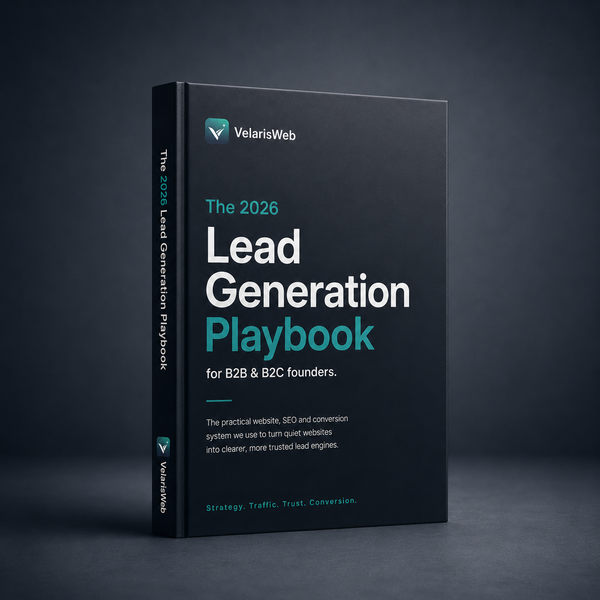

Score
Rate offer clarity, website, LinkedIn, SEO, content, lead capture and tracking from 1 to 5.
Get the practical Velaris Web framework for improving your positioning, website, LinkedIn profile, SEO content, lead capture, follow-up and tracking without relying only on ads.

The playbook is built around practical worksheets and outputs, so a founder can see what is leaking trust, traffic and enquiries across the whole buyer journey.
Rate offer clarity, website, LinkedIn, SEO, content, lead capture and tracking from 1 to 5.
Turn a vague offer into a clear audience, problem, result, method, proof and next step.
Make your website, LinkedIn, Instagram and Facebook use the same message, proof and CTA.
Use SEO, content, lead capture, follow-up and tracking to improve the system over 90 days.
No filler chapters. Each part gives the reader a scorecard, worksheet, checklist, map or template.
If the business already has a valuable service, the fastest ROI often comes from improving clarity, trust, profile consistency, page structure and follow-up before buying more traffic.
Positioning, audience research, competitor review and message clarity.
Homepage, service pages, LinkedIn banner, About section and Featured links.
Search Console, GA4, Clarity, on-page SEO and keyword mapping.
Lead magnet, landing page, form, delivery flow and first follow-up emails.
Useful posts, internal links, LinkedIn content and platform consistency.
Review data, add proof, improve pages, refine CTAs and follow up.
These template blocks make the playbook worth downloading because readers can immediately use them across their website, LinkedIn profile, content plan, DMs and landing page.
We help [audience] solve [problem] and achieve [result] through [method].Helping [audience] achieve [result] through [method].Turn [problem] into [desired result].Would you mind if I reviewed your current online presence and shared a few honest thoughts?Use the playbook to improve your offer clarity, website, LinkedIn profile, social consistency, buyer-intent content, lead capture and follow-up before spending more on ads.
Download the free playbook